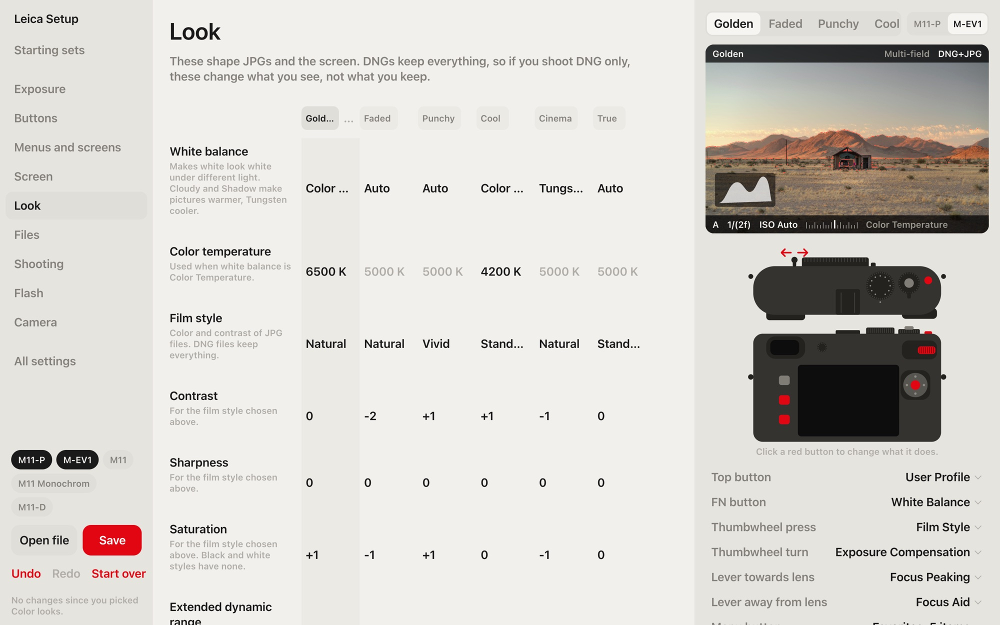
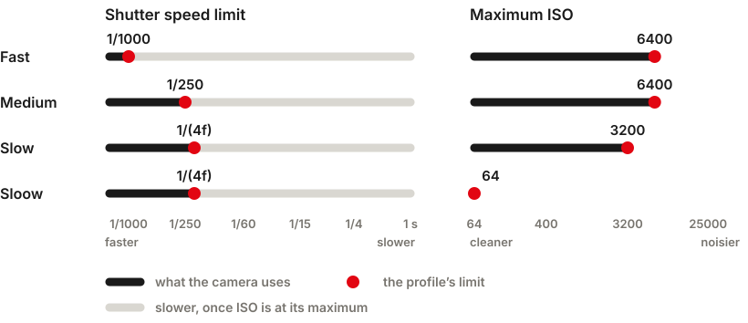

Msetter
Msetter is a free app for setting up a Leica M from a computer or phone instead of the camera’s menus. You design the camera’s user profiles side by side, choose what each button does, put the Favorites menu and the screen layouts in order, and save one settings file for each of your cameras. The camera loads it from its memory card in one step. Everything stays in your browser: files you open and settings you make never leave your computer or phone, and I never see them. Works on the M11, M11-P, M11-D, M11 Monochrom and M-EV1.

Why
Typing on a camera is painful. Profile names, copyright and file names are spelled out one letter at a time with the arrow pad.
Menus are deep and small. Every setting sits a few levels down a menu built for a three-inch screen, reached with a few buttons and a wheel. A new camera takes hours to set up.
Each profile needs the same change. A setting you want everywhere has to be changed in every user profile, one at a time.
The Leica FOTOS app doesn’t fix it. It can change some settings from your phone, but it is still slow, one setting at a time, with little way to organise your user profiles, menus or buttons.
Two cameras drift apart. An M11-P and an M-EV1 have slightly different menus and options. Keeping them alike means going through every menu on both.
Profiles can’t be compared. The camera shows one user profile at a time, so you can’t see what makes Fast different from Slow.
There is no undo. A stray press changes a profile and nothing tells you.
A reset starts you from scratch. After a reset, a repair or a firmware update your setup is gone unless you remember it.
What it does

Your user profiles sit side by side, one column each, with a row for every setting. A setting that is the same in every profile shows once, so one change reaches them all.
The camera is drawn with its buttons and the ones you can set are red. Click one to choose its job from a short list grouped by what it does, or to see what it does on the camera’s screen.
The camera’s screen shows how each profile looks, using a photo with the profile’s white balance, film style, exposure and screen layout, so you can compare Golden with Cinema before you shoot.
You drag the Favorites menu and the four screen layouts into order, the order they appear in on the camera.
Each of your cameras gets its own file. A value one body doesn’t have is swapped for the nearest one it does, and the app lists every swap.
Every setting has a plain name and one line on what it does, and each page says what a settings file can’t change.
Everything can be undone. Changed values are marked, and Save lists every change before it writes the file.
Nothing leaves your browser. Msetter has no server, no account and no tracking. A file you open is read by your browser, not uploaded, and your design is kept in your browser on that device so it is there next time. I never see anything you open or make. The Mac app works the same way and writes the file straight to the camera’s card.
Starting sets
A set is a group of user profiles, Leica’s name for the saved settings you switch between, made for one kind of photography. Each set also chooses the button jobs, the Favorites menu and the screen layouts. Pick one in the app, then change anything.
One press switches profiles. Put User Profile on a button, usually the top one, and each press moves to the next profile. Every set does this, and FN keeps its factory job.
Profiles set limits. With the shutter speed and ISO dials on A, a profile can’t fix the shutter speed or the ISO. It sets a speed limit and a maximum ISO, and the camera chooses within them. Below are the four profiles of the Speed ladder.

Fast keeps the shutter at 1/1000 or faster and lets ISO climb to 6400; once ISO is at 6400, the shutter goes slower than the limit. Sloow allows only ISO 64, so in low light the shutter goes slower straight away: a profile for a tripod. 1/(4f) follows the lens and is drawn for a 50 mm lens, about 1/200. With the ISO dial on M, or on the M-EV1, a profile sets the ISO itself. The aperture is always yours, or use an ND filter.
Speed ladder Shutter and ISO limits for less and less light. The top button steps through them.
| User profile | Speed limit | Max ISO | White balance |
|---|---|---|---|
| Fast | 1/1000 | 6400 | Daylight |
| Medium | 1/250 | 6400 | Auto |
| Slow | 1/(4f) | 3200 | Auto |
| Sloow | 1/(4f) | 64 | Auto |
Day and night Just two user profiles, one for daylight and one for the dark. The top button switches.
| User profile | Speed limit | Max ISO | Exposure |
|---|---|---|---|
| Day | 1/500 | 6400 | 0 |
| Night | 1/60 | 25000 | −1/3 |
Everyday Sun to a tripod at night: limits and white balance for each light. The top button switches, the thumbwheel sets brightness.
| User profile | Speed limit | Max ISO | White balance | Exposure |
|---|---|---|---|---|
| Sunny | 1/1000 | 3200 | Daylight | 0 |
| Shade | 1/250 | 6400 | Shadow | 0 |
| Indoors | 1/125 | 12500 | Auto | 0 |
| Evening | 1/(2f) | 12500 | Auto | −1/3 |
| Night | 1/f | 25000 | Auto | −2/3 |
| Tripod | 1/2 | 100 | Auto | 0 |
Motion Shutter speed as the look, from frozen to streaked. Low ISO limits force slow speeds, so Drag and Streak blur.
| User profile | Speed limit | Max ISO | Drive | Exposure |
|---|---|---|---|---|
| Freeze | 1/2000 | 50000 | Fast burst | 0 |
| Crisp | 1/500 | 12500 | Single | 0 |
| Walk | 1/60 | 6400 | Single | 0 |
| Pan | 1/30 | 800 | Slow burst | 0 |
| Drag | 1/15 | 400 | Single | −1/3 |
| Streak | 1/2 | 100 | Single | −2/3 |
Color looks JPG looks, from golden to cinema. The DNG beside each keeps everything.
| User profile | White balance | Film style | Exposure |
|---|---|---|---|
| Golden | 6500 K | Natural | +1/3 |
| Faded | Auto | Natural | +1/3 |
| Punchy | Auto | Vivid | 0 |
| Cool | 4200 K | Standard | 0 |
| Cinema | Tungsten | Natural | −1/3 |
| True | Auto | Standard | 0 |
Cinema Film grades with a speed limit for each light. Metering protects highlights.
| User profile | Speed limit | Max ISO | White balance | Film style |
|---|---|---|---|---|
| Day | 1/125 | 3200 | 5500 K | Natural |
| Golden | 1/(2f) | 6400 | 7200 K | Natural |
| Dusk | 1/60 | 12500 | Tungsten | Natural |
| Neon | 1/60 | 25000 | Auto | Vivid |
| Interior | 1/60 | 12500 | 4200 K | Natural |
| Noir | 1/60 | 12500 | Auto | Monochrome High Contrast |
Street Fast limits for sun, shade, inside and night, plus black and white. Metering keeps the highlights. No review, no touch.
| User profile | Speed limit | Max ISO | Film style | Exposure |
|---|---|---|---|---|
| Sunny | 1/500 | 6400 | Standard | −1/3 |
| Shade | 1/250 | 12500 | Standard | −1/3 |
| Inside | 1/125 | 25000 | Standard | −1/3 |
| Night | 1/60 | 25000 | Standard | −2/3 |
| Mono | 1/250 | 12500 | Monochrome | −1/3 |
One speed The shutter dial stays on one speed, often 1/250, and each profile fixes the ISO and white balance for its light. No review, no touch, as with film. On a camera with an ISO dial, set it to M.
| User profile | ISO | White balance | Film style |
|---|---|---|---|
| Sun | 200 | Daylight | Standard |
| Shade | 400 | Shadow | Standard |
| Inside | 3200 | Auto | Standard |
| Night | 6400 | Auto | Standard |
| Pushed | 3200 | Auto | Monochrome High Contrast |
Portrait Softer color for people: outdoors, window, flash, and black and white. Pressing the thumbwheel magnifies for focus.
| User profile | Speed limit | Max ISO | Film style | Exposure |
|---|---|---|---|---|
| Outdoor | 1/(2f) | 6400 | Natural | 0 |
| Window | 1/125 | 12500 | Natural | +1/3 |
| Flash | 1/125 | 6400 | Natural | 0 |
| Mono | 1/(2f) | 6400 | Monochrome | 0 |
Landscape Tripod at base ISO with a 2 s timer, handheld, brackets, blue hour, black and white. Grid, horizon and histogram on.
| User profile | Speed limit | Max ISO | ISO | White balance |
|---|---|---|---|---|
| Tripod | 1/(4f) | 3200 | 64 | Auto |
| Walk | 1/(2f) | 3200 | Auto | Auto |
| Bracket | 1/(4f) | 3200 | 64 | Auto |
| Blue hour | 1/8 | 6400 | Auto | Daylight |
| Mono | 1/(2f) | 3200 | Auto | Auto |
Night High ISO for dark streets and street lights, and a tripod for stars. Lights off, screens dimmed.
| User profile | Speed limit | Max ISO | ISO | White balance |
|---|---|---|---|---|
| Dark | 1/f | 25000 | Auto | Auto |
| Darker | 1/30 | 50000 | Auto | Auto |
| Lights | 1/60 | 12500 | Auto | Tungsten |
| Stars | 1/(4f) | 3200 | 3200 | 3900 K |
Events Silent for ceremonies and speeches, people, flash at the party, details. Pressing the thumbwheel magnifies for focus.
| User profile | Speed limit | Max ISO | Film style | Drive |
|---|---|---|---|---|
| Quiet | 1/250 | 12500 | Standard | Single |
| People | 1/(2f) | 6400 | Natural | Single |
| Party | 1/125 | 6400 | Standard | Single |
| Details | 1/125 | 6400 | Standard | Single |
| Speeches | 1/125 | 25000 | Standard | Slow burst |
Black and white Black and white looks, soft to noir, with color DNGs kept beside them. White focus peaking.
| User profile | Speed limit | Max ISO | Film style | Exposure |
|---|---|---|---|---|
| Soft | 1/(2f) | 6400 | Monochrome | +1/3 |
| Mono | 1/(2f) | 6400 | Monochrome | 0 |
| Hard | 1/(2f) | 6400 | Monochrome High Contrast | 0 |
| Noir | 1/60 | 6400 | Monochrome High Contrast | −2/3 |
| Grain | 1/250 | 50000 | Monochrome | 0 |
| Color | 1/(2f) | 6400 | Standard | 0 |
Travel Days out, museums, food, nights, and a battery saver.
| User profile | Speed limit | Max ISO | Film style | Exposure |
|---|---|---|---|---|
| Day | 1/(2f) | 6400 | Standard | 0 |
| Museum | 1/125 | 25000 | Standard | 0 |
| Food | 1/125 | 12500 | Vivid | 0 |
| Night | 1/f | 25000 | Standard | −1/3 |
| Saver | 1/(2f) | 12500 | Standard | 0 |
Kids and pets Fast speeds and bursts, outside and in, and a quiet one for sleeping.
| User profile | Speed limit | Max ISO | Drive | Shutter |
|---|---|---|---|---|
| Run | 1/1000 | 25000 | Fast burst | Hybrid |
| Play | 1/500 | 12500 | Slow burst | Hybrid |
| Inside | 1/250 | 25000 | Slow burst | Hybrid |
| Asleep | 1/60 | 12500 | Single | Electronic |
Factory Every setting as a new camera has it, in one profile.
| User profile | Speed limit | Max ISO |
|---|---|---|
| User1 | 1/(4f) | 3200 |
How to use it
- Pick your cameras. Msetter makes a separate file for each, so two bodies can share one design even where their menus differ.
- Start from a set or from your camera. To start from your camera, export its settings to the card (User Profile › Manage Profiles › Export Profiles) and open the file in the app.
- Change what you like. Settings are grouped by what they are for. Point at a setting to see what it does. Undo takes back anything.
- Save and import. Copy
settings.lcseto the top of the card, then User Profile › Manage Profiles › Import Profiles. This replaces every profile on the camera, so export yours first.
On the camera, press the top button to step through the profiles. If you change a setting, the camera shows Default instead of the profile’s name until you choose a profile again. The camera doesn’t say when it skips a value, so check a few settings after your first import.